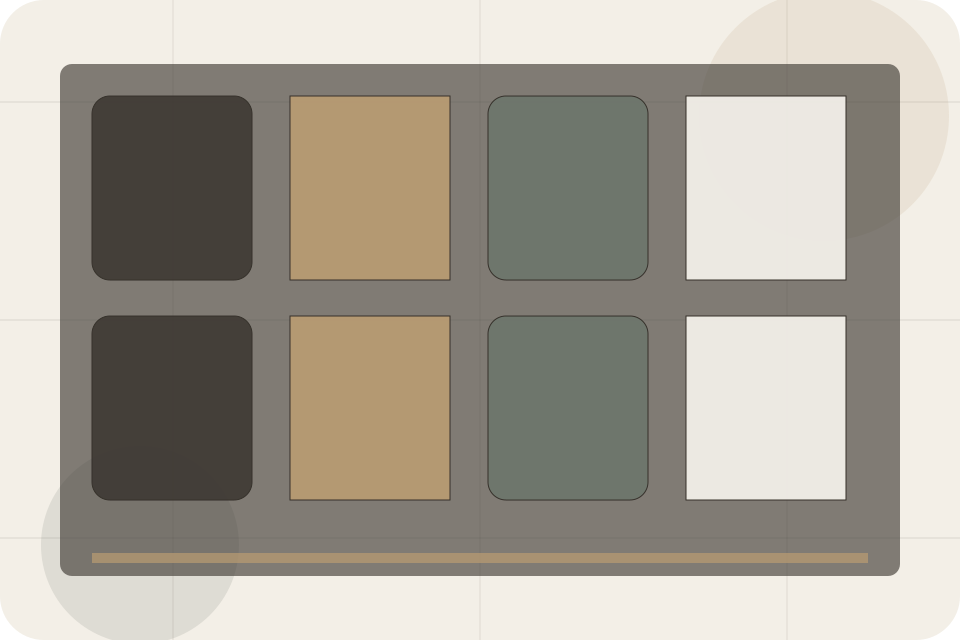
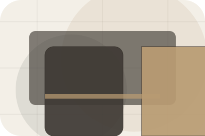
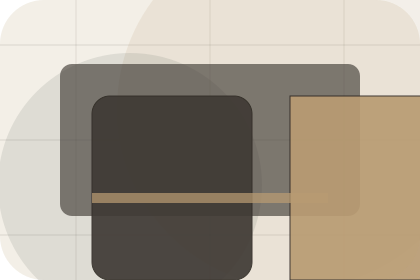
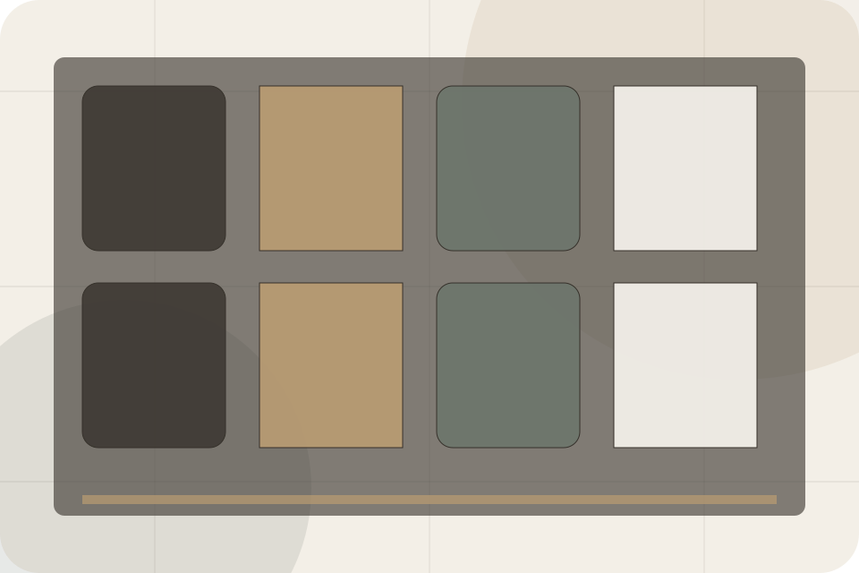
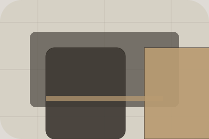

Contact / 01
Contact by Stay
Contact shaped for hospitality, hotels & guest accommodation decisions.
Contact opens as a clear hospitality decision hub: what Stay offers, who it helps, why it matters, and which route to take first.
The first screen combines positioning, proof, primary action, and fast internal navigation, so people can act immediately or compare the rest of the contact route with context.
Check availabilityPlan the visitReserve with context
Serene full-bleed stay hero
Check Availability
Select the closest route and Stay keeps the next step, proof, and follow-up expectation aligned with comfort and availability.

Contact / 02
Address
Address makes the contact path concrete: what to send, how the response works, and what Stay needs before visitors check availability.
The section reduces contact friction by naming the channel, expected detail, privacy path, and response expectation instead of dropping visitors into a generic form.
Check Availability- 01
Details
What information helps Stay respond with a useful answer instead of a generic reply.
- 02
Timing
How the visitor should think about response, urgency, location, or availability.
- 03
Reply
The expected next message keeps scope, timing, and the first practical step clear.
Contact / 03
Phone
Phone makes the contact path concrete: what to send, how the response works, and what Stay needs before visitors check availability.
The section reduces contact friction by naming the channel, expected detail, privacy path, and response expectation instead of dropping visitors into a generic form.
Check AvailabilityStay keeps phone practical: send the key details, choose the right contact route, and know what kind of reply to expect.
Check AvailabilityContact / 04
Email makes the contact path concrete: what to send, how the response works, and what Stay needs before visitors check availability.
The section reduces contact friction by naming the channel, expected detail, privacy path, and response expectation instead of dropping visitors into a generic form.
Check Availability
Details
What information helps Stay respond with a useful answer instead of a generic reply.
Contact / 05
Map
Map makes the contact path concrete: what to send, how the response works, and what Stay needs before visitors check availability.
The section reduces contact friction by naming the channel, expected detail, privacy path, and response expectation instead of dropping visitors into a generic form.
Check AvailabilityDetails
What information helps Stay respond with a useful answer instead of a generic reply.
Timing
How the visitor should think about response, urgency, location, or availability.
Reply
The expected next message keeps scope, timing, and the first practical step clear.
Contact / 06
Transport
Transport makes the contact path concrete: what to send, how the response works, and what Stay needs before visitors check availability.
The section reduces contact friction by naming the channel, expected detail, privacy path, and response expectation instead of dropping visitors into a generic form.
Check AvailabilityWhat information helps Stay respond with a useful answer instead of a generic reply.
How the visitor should think about response, urgency, location, or availability.
The expected next message keeps scope, timing, and the first practical step clear.
Contact / 07
Reception
Reception makes the contact path concrete: what to send, how the response works, and what Stay needs before visitors check availability.
The section reduces contact friction by naming the channel, expected detail, privacy path, and response expectation instead of dropping visitors into a generic form.
Check AvailabilityDetails
What information helps Stay respond with a useful answer instead of a generic reply.
Timing
How the visitor should think about response, urgency, location, or availability.
Reply
The expected next message keeps scope, timing, and the first practical step clear.
Contact / 09
Submit
Submit makes the contact path concrete: what to send, how the response works, and what Stay needs before visitors check availability.
The section reduces contact friction by naming the channel, expected detail, privacy path, and response expectation instead of dropping visitors into a generic form.
Check Availability
Details
What information helps Stay respond with a useful answer instead of a generic reply.
Contact / 10
Check Availability
Stay closes the contact route with a clear action, a quick reminder of the value, and a low-friction way to check availability.
Visitors who are ready can use the primary action. Visitors who are still comparing can scan the section links, proof, and support routes before they check availability.
Check AvailabilityThe final block keeps the choice simple: act now, compare one more proof route, or send enough detail for a focused response.
Check Availability
comfort and availability
Check Availability
A hotel site with serene full-bleed rooms, understated booking modules, experience cards, and policy calm. Contact ends with a direct path to check availability, plus enough context for visitors who still need to compare.

Check AvailabilityNotes
Rates, availability, cancellation, and access policies depend on selected dates and booking terms.